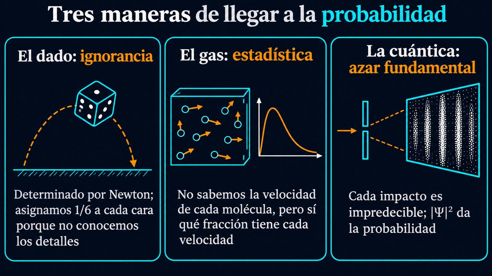

Dados, gases y cuántica: tres razones distintas para no saber
Un dado que rueda sobre la mesa, el aire de una habitación y un electrón que atraviesa dos rendijas tienen algo en común: para describirlos, la física habla de probabilidades. Las cuentas son las mismas en los tres casos, pero el motivo por el que no sabemos qué va a pasar es distinto. En el dado, nos faltan datos. En el gas, hay demasiados datos para seguirlos uno por uno. En la cuántica, los experimentos indican que el azar no se explica como una falta de datos de ese tipo. Son tres maneras de no saber, y conviene no confundirlas.

La teoría matemática de la probabilidad se apoya en tres axiomas, que formuló Kolmogorov: las probabilidades no son negativas, la de dos resultados que se excluyen es la suma de las probabilidades de cada uno y la de que ocurra algo es 1. La revisión de probabilidad del Particle Data Group, la referencia de los físicos de partículas, subraya que estos axiomas dejan abierta la interpretación: no dicen qué es una probabilidad.
La interpretación más usada es la frecuentista: la probabilidad de un resultado es la fracción de veces que aparece cuando el experimento se repite muchas veces. Hay otra, la subjetiva o bayesiana, en la que la probabilidad mide el grado de confianza en que una afirmación sea cierta; es la base del razonamiento bayesiano. Las dos usan las mismas reglas de cálculo. Lo que cambia de un sistema físico a otro es de dónde viene la incertidumbre.
En 1814, Pierre-Simon Laplace publicó su Ensayo filosófico sobre las probabilidades, basado en un curso que había dado en 1795. Allí describió una inteligencia que, en un instante, conociera todas las fuerzas de la naturaleza y la posición de todos los seres que la componen, y que fuera capaz de analizar esos datos: «para ella nada sería incierto, y el futuro, como el pasado, estaría presente ante sus ojos». Para Laplace, la probabilidad no es una propiedad de las cosas: «es relativa, en parte a esta ignorancia, en parte a nuestros conocimientos».
El dado es el ejemplo perfecto de esa visión. Su movimiento obedece a las leyes de Newton, y si conociéramos con todo detalle cómo sale de la mano, su resultado estaría determinado. Le asignamos 1/6 a cada cara porque no tenemos ese detalle y nada nos hace preferir una cara sobre otra. Cuánta precisión haría falta para predecir un sistema así es, justamente, el tema del caos determinista.
Laplace aplicaba la misma idea a escala microscópica: según su Ensayo, la curva que describe una molécula de aire está regida de manera tan cierta como las órbitas de los planetas, y la única diferencia es nuestra ignorancia. Pero en un gas aparece algo nuevo. El movimiento de cada molécula es aleatorio en rapidez y dirección, y sin embargo un gas con muchas moléculas tiene una distribución de velocidades predecible: la distribución de Maxwell-Boltzmann, calculada a partir de la teoría cinética y confirmada en experimentos.
En este caso la probabilidad no es un defecto que habría que corregir: es la herramienta que permite decir algo preciso. No sabemos qué velocidad tiene una molécula, pero sí qué fracción de las moléculas tiene velocidades entre dos valores.
La encuesta y el votante: una encuesta bien hecha puede anticipar qué porcentaje de una población va a votar a cada candidato sin saber qué va a votar una persona en particular. La física estadística hace lo mismo con las moléculas: renuncia a cada caso individual y gana una predicción precisa sobre el conjunto.
Si en el experimento de las dos rendijas se ilumina la pantalla con luz muy débil, el patrón de interferencia no aparece de golpe: se forma punto por punto, con cada fotón que llega. Cada impacto cae en un lugar que no se puede predecir, pero los puntos se acumulan donde el patrón es más intenso. Con las condiciones adecuadas, lo mismo ocurre con electrones. La mecánica cuántica lo describe con la función de onda Ψ: el cuadrado de su módulo, |Ψ|², da la densidad de probabilidad de encontrar la partícula en cada lugar. Se la llama interpretación de Born, por Max Born, que en 1954 recibió el Nobel por sus estudios estadísticos de las funciones de onda.
¿Es este azar como el del dado, un reflejo de datos que no conocemos? Durante décadas se discutió si las partículas llevan «variables ocultas», instrucciones que les dicen qué resultado dar en cada medición. John Bell mostró que esa pregunta se puede llevar al laboratorio, y los experimentos con partículas entrelazadas dieron la respuesta: las correlaciones medidas superan el límite que permitiría cualquier teoría de variables ocultas locales. Según la Real Academia Sueca de Ciencias, que premió esos experimentos con el Nobel de 2022, esto significa que la mecánica cuántica no puede reemplazarse por una teoría de ese tipo. El azar cuántico no es ignorancia de unas instrucciones escritas de antemano en cada partícula.
«La probabilidad es 1/6» dicha de un dado significa: no sé cómo salió de la mano. «La fracción de moléculas con esta velocidad es 0,2» significa: no sigo cada molécula, pero conozco el conjunto. «La probabilidad de detectar el electrón acá es |Ψ|² dx» significa: aun conociendo la función de onda, la teoría solo da la probabilidad de cada resultado. Las reglas de cálculo son las mismas; el origen de la incertidumbre, no.
Frecuencia o grado de confianza: la revisión del Particle Data Group da un ejemplo de por qué hacen falta las dos lecturas. La afirmación «la masa del bosón W está entre 80,3 y 80,5 GeV» es verdadera o falsa: si se repite la medición, su frecuencia es siempre 1 o siempre 0. Para un frecuentista, entonces, no tiene sentido asignarle una probabilidad intermedia. En la lectura subjetiva sí lo tiene: es el grado de confianza que justifican los datos. Las dos escuelas conviven en el análisis de datos de la física.
Cuando un físico dice «probablemente», conviene preguntarle de qué tipo de probabilidad habla. En el dado, la incertidumbre es nuestra: refleja lo que no medimos. En el gas, es una elección: renunciamos a cada molécula para describir el conjunto. En la cuántica, los experimentos de Bell indican que no se trata de instrucciones ocultas locales que podríamos llegar a leer. Tres maneras de no saber, con una sola matemática para todas.
Pregunta para la comunidad: Una moneda tirada al aire, ¿se parece más al dado, al gas o al electrón? ¿Y la desintegración de un núcleo radiactivo, del que solo se puede decir con qué probabilidad se desintegra en el próximo segundo?